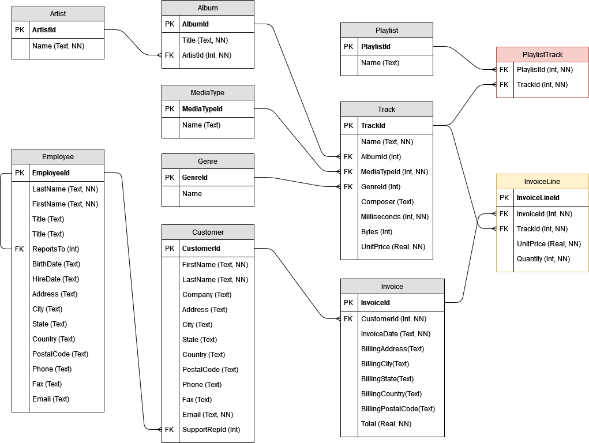

Guía de Ejercicios
Guía de ejercicios prácticos Unidades 1 y 2
Resolver
A continuación se presenta la descripción de un modelo a resolver. Leer atentamente y generar:
El MER correspondiente.
Incluir la cardinalidad en las relaciones.
Indicar el dominio de cada atributo y si es compuesto y/o multivaluado.
El DER correspondiente.
Identificar claramente las claves primarias (PK) y claves foráneas (FK)
Identificar las restricciones necesarias para mantener la integridad.
Mapear correctamente las cardinalidades de las relaciones indicadas en el MER.
Opcional: pueden incluir un texto que justifique o explique las decisiones tomadas en cada punto.
Sistema de Red de Ensayos de Cultivares
Se nos pide que modelemos una base de datos para una red de ensayos de cultivares brindándonos la siguiente información:
La red de ensayos de cultivares de diferentes cultivos, como por ejemplo Girasol, Maíz, Trigo, Soja, etc. está integrada por un conjunto de localidades y experimentos (las localidades y cantidad de experimentos cambian con las campañas). Las campañas van de junio de un año a julio del año siguiente. De esta manera las campañas se nombran como 2019-2020, 2020-2021 y así sucesivamente.
Los cultivares (semillas) incluidos en cada ensayo son elegidos por los proveedores de semilla, estos cultivares tienen un nombre único (compuesto por letras y números) y pertenecen a una empresa (un semillero). Participan entre 25 a 65 semillas por localidad y campaña. Los cultivares pueden estar en más de una localidad y en más de una campaña y los proveedores pueden elegir ninguna o muchas semillas para participar de los ensayos.
En los ensayos se siembran cultivares y se van registrando datos sobre como crece esa semilla, por ejemplo, se miden alturas, cantidad de plantas, se anotan fechas de interés y luego cuando se cosecha, se miden otras variables como cuanto rindió.
Para este sistema interesa registrar los ensayos de cada cultivar de cada cultivo en cada localidad por cada campaña.
Los datos a registrar son:
Cultivar, Empresa del cultivar, Fecha de Floración del cultivar, Cantidad de días entre siembra y floración del cultivar, Altura del cultivar, Altura promedio de plantas de las parcelas del cultivar, Densidad del cultivar, Rendimiento del cultivar, Porcentaje de humedad del cultivar, Aceite del cultivar, Campaña, Localidad del ensayo, Latitud y Longitud de la localidad donde se realiza el ensayo, Nombre del ensayo (que se forma con la localidad y la campaña), Tipo de Ensayo (puede ser: Convencional, Clearfield, Alto Oleico, Confitero, Tardia), Cultivo del Ensayo (pude ser Girasol, Soja, Maíz, etc), Distancia entre surcos, Tipo Siembra (puede ser: Directa, Convencional), Fecha de Siembra.
Sistema de Club de Lectura
Nos piden ayuda para modelar el sistema de un club de lectura en el cual los socios aportan una cuota mensual y reciben todos los meses un libro en su domicilio para leer. Los responsables del club de lectura nos brindaron la siguiente información:
Los libros son escritos por autores de los cuales conocemos su nombre, su nacionalidad y su fecha de nacimiento. Cada autor puede escribir uno o muchos libros.
Los libros cuentan con un título, el idioma y la cantidad total de páginas. Adicionalmente, sabemos que cada libro tiene ediciones (que pueden ser una o muchas), de las cuales sabemos el año, el ISBN (que no puede repetirse) y la editorial. También sabemos que los libros son escritos por uno o muchos autores. El club cataloga los libros por género (ej: ciencia ficción, terror, historia, comedia, etc.). Los libros pueden pertenecer a más de un género.
El club envía los libros a los socios que están al día con su cuota. De los socios sabemos su DNI, su nombre y apellido y su domicilio completo (calle, altura, código postal, localidad). Los socios marcan sus preferencias de género porque esto ayuda a los responsables del club con la decisión de qué tipo de libro comprar cada mes. También queremos registrar los pagos realizados por cada socio y los libros que ya le enviamos.
Sistema de Netflix
Tenemos que generar la base de datos para poder llevar la información de los clientes de la plataforma Netflix.
Es importante registrar los clientes, los contenidos que tenemos disponibles y si el cliente ya miró un contenido.
Sobre el cliente nos interesa conocer sus datos de contacto (dirección completa con calle, altura, codigo postal, ciudad; telefonos, email, etc), nombre completo, DNI y medio de pago.
Sobre los contenidos queremos saber el título, el tipo (película, serie, documental) y el género (comedia, acción, drama, etc.), tiempo de duración, idioma original, idioma de subtítulos disponibles y año de estreno. Tener en cuenta que un contenido puede pertenecer a más de un género y que puede tener ninguno o varios subtítulos.
Tener en cuenta que un cliente puede ver muchos contenidos y un contenido puede ser visto por muchos clientes. Nos interesa saber cuando un cliente miró un contenido y si lo vio completo.
Sistema de Campeonato de Fútbol
Necesitamos generar una base de datos para almacenar la marcha del campeonato de fútbol local. Los responsables del campeonato nos brindaron la siguiente información:
El campeonato dura un año y compiten en él 30 equipos. Los campeonatos tienen un nombre que cambia todos los años, por ejemplo: Campeonato Sponsor 1.
Los equipos tienen un nombre, cantidad de hinchas, colores en una camiseta titular y colores en una suplente, un estadio y una fecha de fundación. Además tiene una serie de jugadores y un equipo técnico.
Los jugadores juegan uno o más campeonatos por cada equipo, pero solo pueden cambiar de equipo cuando termina un campeonato. Se almacena su pasaporte, nombre completo, edad, posición y en qué equipo juega.
El equipo técnico está compuesto por médicos, preparadores físicos, el técnico y los entrenadores de arquero, delanteros, defensores y mediocampistas. Sobre ellos también tenemos los datos de nombre, pasaporte, ocupación y en qué equipo trabajan.
En cada campeonato se realizan una serie de partidos, donde finalmente todos los equipos se enfrentan al menos una vez. Para cada partido se debe almacenar la fecha, los equipos que jugaron, el resultado final y la terna arbitral que lo dirigió.
Sistema de Programas de Radio y auspiciantes
Una radio local nos solicita un sistema para poder llevar registro de que programa de radio tienen publicidad con el objetivo de determinar qué programa aporta mayor ganancia por publicidad. La información que nos brinda es la siguiente:
El programa tiene uno o más conductores, un productor y un operador. Además tiene nombre, y un día y horario en el que se emite. Un programa se emite en un solo día y horario.
Los auspicexaiantes son comercios, instituciones u organizaciones. Se almacena el nombre, datos de contacto (dirección completa, telefonos, mails) y datos de facturación. También interesa conocer que tipo de publicidad contrataron, cuanto pagaron y en qué programa solicitaron que se emita esa publicidad.
La publicidad puede ser de diferente tipo (anuncio largo, medio y corto) y tienen precio diferente de acuerdo a ese tipo. El precio corresponde a un día de publicidad.
Un programa puede tener ninguno o muchos tipos de publicidades que además corresponden a diferentes auspiciantes.
Un auspiciante puede anunciar en uno o más programas.
Además un auspiciante selecciona un rango de fechas en el que va a pagar por la publicidad.
Sistema de Terminal de Colectivos
Nos piden modelar una base de datos para la terminal de colectivos de Retiro para registrar el ingreso y egreso de colectivos y pasajeros.
Para las llegadas y partidas se desea conocer la empresa de transporte, el horario de salida y de llegada, el lugar de salida y destino, los nombres de los choferes, la cantidad de pasajeros y la patente del colectivo.
Así mismo se espera tener un registro de las empresas de transporte que incluya los datos generales (CUIT, teléfono de contacto, dirección o número de ventanilla en la terminal) y la flota de colectivos con la que cuenta la empresa. Para cada colectivo se cuenta con los datos del modelo, patente, cantidad de asientos y fecha de último control vehicular.
Tener en cuenta que un colectivo solo puede pertenecer a una empresa de transporte y un chofer solo puede trabajar en una empresa.
Sistema de Inscripciones
Una organización dicta cursos gratuitos para docentes y necesita organizar la información de esos cursos, las personas que participan y sus docentes. Los responsables nos proveyeron la siguiente información:
Tienen distintos cursos de distinta duración que se ofrecen en distintos horarios y días de la semana. El curso tiene un nombre y un link en una página web con la información general.
Una edición de un curso está a cargo de al menos un docente y un ayudante o dos docentes. Es necesario registrar la fecha y hora de la edición, a que curso corresponde y quienes dictaron el curso y qué rol tuvieron. También cuantas personas se registraron y cuantas asistieron a esa edición.
Algunos de los cursos pueden tener como requisito haber participado en un curso previo por lo que necesitan registrar la asistencia de cada persona en cada edición de un curso.
Al registrarse un participante, indica su nombre y apellido, email, institución en la que trabaja, a cuantas personas da clases y que cursos quiere realizar.
Sistema de gestión de vacunación
Un municipio nos pide ayuda para organizar la vacunación contra COVID de toda la población. La vacunación es voluntaria y el orden dependerá de la edad, y determinadas condiciones de salud de las personas. Se deben registrar las siguientes datos:
Al registrarse para recibir las vacunas cada persona debe completar un formulario que incluye su DNI, género, fecha de nacimiento, antecedentes médicos y datos de contacto. La persona también selecciona el centro de vacunación que le queda más cómodo.
El municipio recibe distintas marcas de vacuna que varían en tiempo entre primera y segunda dosis, la temperatura de transporte y de conservación y el laboratorio que las genera (un laboratorio puede producir más de una vacuna). Cada lote de vacunas está identificado por un código numérico pero no se garantiza que no se repitan entre las distintas marcas.
La vacunación se desarrollará en distintos centros de atención distribuidos en todo el municipio. Cada centro tiene una determinada capacidad de atención y un horario establecido para la atención al público. Nos interesa registrar cuando la persona ya fue vacunada, que dosis, de que vacuna y en qué fecha. Cada persona recibirá dos dosis de la misma marca de vacuna.
Sistema de Farmacias
Debemos diseñar un sistema para registrar las farmacias en diferentes ciudades de nuestro país.
Cada farmacia tiene un nombre y un domicilio. Cada farmacia se ubica en una sola ciudad, pero en una ciudad hay varias farmacias.
De cada ciudad, sabemos el nombre, la provincia en la que se encuentra y la cantidad de habitantes. Conocemos también que cada farmacia puede tener un propietario, y que cada propietario tiene solamente una farmacia.
De los propietarios, conocemos el DNI (único), su nombre y su domicilio, compuesto por calle, número, código postal y ciudad.
Cada farmacia, a su vez, vende varios medicamentos y un medicamento se vende en varias farmacias. De cada medicamento conocemos su id único, su nombre comercial y las drogas de las cuales se compone. Cada farmacia vende un medicamento a un precio determinado, que no necesariamente es el mismo en todas las farmacias.
Sistema de Agencia de viajes
Se quiere realizar una base de datos para llevar la información de varias agencias de viajes. De cada una se conoce su código, la fecha de inicio de actividades y la ciudad donde operan. Solo pueden operar en una ciudad.
Cada agencia ofrece paquetes turísticos, los cuales tienen un precio y destinos a varios países. Se identifican por un código de paquete. Un paquete puede estar relacionado con uno o más paquetes a modo de combo (ejemplo: viaje a Disney + crucero por el Caribe). Cada paquete es propio de una agencia y no puede ser vendido en otra.
Los paquetes son comprados por clientes, los cuales tienen un nombre, domicilio y son diferenciados por su DNI. Estos clientes tienen varias formas de pago, de las cuales conocemos su tipo (credito, debito, efectivo) y el monto a pagar por cada medio de pago.
Los medios de pago son autorizados por un solo banco, de los cuales sabemos que poseen un nombre y un número de sucursal, que es único en todo el sistema. Al autorizar los pagos, se establece una fecha de validez.
Sistema de préstamos de Bibliotecas
Los libros son uno de los componentes más importantes. De cada uno de ellos nos interesa registrar su título y género al que pertenece. Todo autor escribe al menos un libro, y a su vez todo libro tiene al menos un autor. De ellos interesa saber su nombre, su nacionalidad y año de nacimiento.
Un libro tiene además al menos una edición. De ellas interesa el año, el ISBN (un identificador único entre ediciones de libros), y además su idioma.
Las ediciones tienen como mínimo una copia, aunque las más demandadas tienen varias copias. Cada copia se diferencia por su número, aunque este número por si solo no basta para diferenciarla: es necesario conocer además la edición a la que pertenecen.
Finalmente, las copias son las que serán pedidas en préstamo por los usuarios. Un usuario pide prestada una copia en una fecha específica, y en ese momento se le asigna una fecha de devolución. Del usuario se conoce el DNI (que lo identifica de otros usuarios), su nombre, su apellido y un email. Un usuario puede no pedir copias. A su vez, puede que una copia nunca sea pedida en préstamo.
Guía de ejercicios prácticos unidad 3
Utilizando la base de datos Chinook resolver los siguientes ejercicios. La figura presenta el Diagrama Entidad Relación y este es significado de los nombres de las tablas en castellano.
- Invoice = Factura
- InvoiceLine = Detalle de la factura
- Customer = Cliente
- Track = Pista
- MediaType = Tipo de Medio
- Employee = Empleado
- Genre = Género
- Artist = Artista
- Album = Album
- PlayList = lista de reproducción
- PlaylistTrack = pistas por lista de reproducción

Ejercicios de manipulación de estructuras y de datos
Escribir las sentencias SQL para CREAR las tablas Track, MediaType y Genre.
Escribir la sentencia SQL para INSERTAR un nuevo registro en la tabla Customer (usar sus datos personales como datos en la sentencia).
Escribir la sentencia SQL para ACTUALIZAR el precio unitario de todas las pistas del Álbum número 14 a 5 dólares.
Ejercicios de consultas
Listar todos los empleados que son de la ciudad Calgary.
Listar todas las facturas cuyo total sea mayor a 10 y el país sea igual a Chile.
Listar el nombre de la pista y el título del álbum ordenado de forma ascendente por título del álbum.
Listar el id de la factura, los nombres de las pistas y la cantidad de vendida de todas las facturas cuyo ID sea menor a 10.
Listar los nombres de las pistas vendidas, y cuántas se vendieron (este dato está en Cantidad - Quantity), ordenar de forma descendente por este último dato.
Listar cada playlist con el total de pistas que tiene cada una.
Los Bytes indican cuando ocupa cada pista en formato digital. Listar el máximo, el mínimo, el promedio y el total de bytes de todas las pistas.
Modificar la consulta anterior para hacer los mismos cálculos pero con la duración de cada pista. Está medida en milisegundos (Milliseconds).
Listar cuantas pistas tiene cada tipo de Medio, mostrando el nombre del tipo de medio y la cantidad ordenado de mayor a menor.
Obtener un listado sin repetir de los países de los clientes y otro de los empleados.Luego generar una sola lista con ambas consultas.
Mostrar una lista de todos los artistas en orden alfabético.
Mostrar la cantidad de álbumes por artistas y ordenar la información en orden alfabético por nombre de artista.
Calcular el promedio de ventas por país.
Buscar el nombre de la pista (track) más cara y la más barata.
General una tabla que combine el nombre completo del cliente y del empleado que lo atendió.
Contar la cantidad de pistas por género.
Modificar la consulta anterior para mostrar el nombre del género en la lista en vez del id.
Calcular la duración promedio de las pistas por género.
Calcular la duración total de cada álbum y mostrarlos de más a menos largo.
Modificar la consulta anterior para incluir el nombre del artista y el genero.
Guía de ejercicios prácticos unidad 4 - R
En R y usando la base de datos de mamíferos
De la tabla survey seleccionar la fecha completa.
Filtrar los registros para el año 1977
Calcular el promedio del tamaño de tobillo (hindfoot) para las distintas especies.
¿Cuál es el animal más pesado medido cada año?
A partir de la tabla de especies, escribir una consulta que una las tablas species y de surveys para excluir a todos los no roedores (Rodent en la variable genus). La consulta debe devolver los recuentos de roedores por año.
Utilizando la base de datos Chinook
Resolver los siguientes ejercicios en R en RStudio. La solución debe incluir el código necesario para leer las tablas utilizadas.
La figura presenta el Diagrama Entidad Relación y este es significado de los nombres de las tablas en castellano.
- Invoice = Factura
- InvoiceLine = Detalle de la factura
- Customer = Cliente
- Track = Pista
- MediaType = Tipo de Medio
- Employee = Empleado
- Genre = Género
- Artist = Artista
- Album = Album
- PlayList = lista de reproducción
- PlaylistTrack = pistas por lista de reproducción
Escribir el código necesario para LISTAR cuantas pistas tiene cada tipo de Medio, mostrando el nombre del tipo de medio y la cantidad ordenado de mayor a menor.
Escribir el código de R para obtener un listado sin repetir de los países de los clientes y otro de los empleados.
Escribir el código necesario para LISTAR cuantas pistas tiene cada tipo de Genre, mostrando el nombre del genero y la cantidad ordenado de mayor a menor.
Escribir el código de R necesario para ACTUALIZAR el precio unitario de todas las pistas de los álbunes número 16 y 17 con un aumento de un 250%.
Escribir el código de R necesario para LISTAR cuantas pistas tiene cada PlayList, mostrando el nombre de la playlist y la cantidad de pistar ordenado de mayor a menor.
Escribir el código de R necesario para LISTAR todos los clientes que sean atenidos por el empleado de apellido Park.